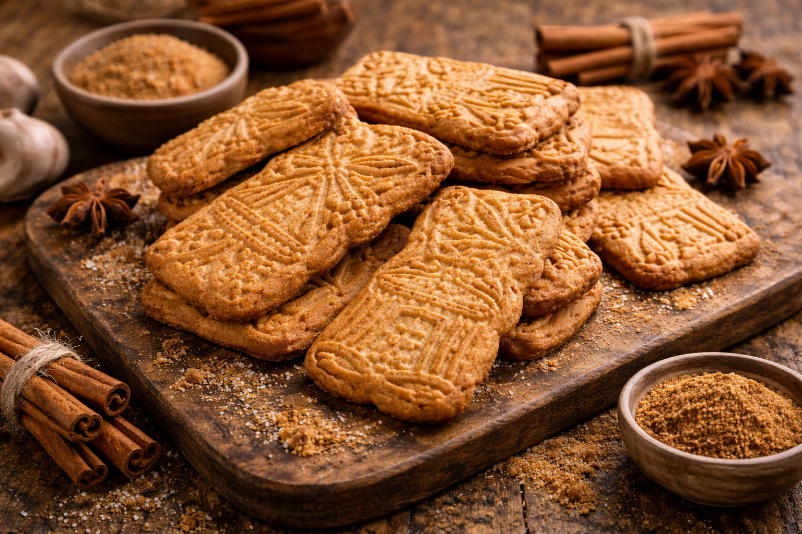

Biscuit belge traditionnel aux épices, croustillant et parfumé, parfait avec un café.
============================== PRÉPARATION ============================== 1. Préchauffer le four à 180°C. 2. Mélanger la farine, les épices et le sel. 3. Ajouter la cassonade. 4. Incorporer le beurre ramolli. 5. Mélanger jusqu’à obtenir une pâte homogène. 6. Former une boule. 7. Étaler la pâte sur un plan fariné. 8. Découper les biscuits. 9. Déposer sur une plaque recouverte de papier cuisson. 10. Cuire 12 à 15 minutes. 11. Laisser refroidir pour qu’ils deviennent croustillants. 12. Servir. ============================== INFORMATIONS ET CONSEILS ============================== Le spéculoos est une friandise typiquement belge, souvent offerte aux enfants lors de la période de la Saint-Nicolas. On les trouve d’ailleurs en forme de Saint-Nicolas, dans différentes tailles… mais pas uniquement. Je vous conseille de les déguster avec un bon café ou un thé. En Belgique, on reçoit d’ailleurs très souvent un spéculoos lorsque l’on commande un café dans un établissement. Vous pouvez les tremper dedans sans problème : c’est un biscuit assez dur qui ne se cassera pas en s’imbibant du café. Le mélange d’épices (cannelle, clou de girofle, gingembre) donne au spéculoos son parfum chaleureux typique des fêtes d’hiver.